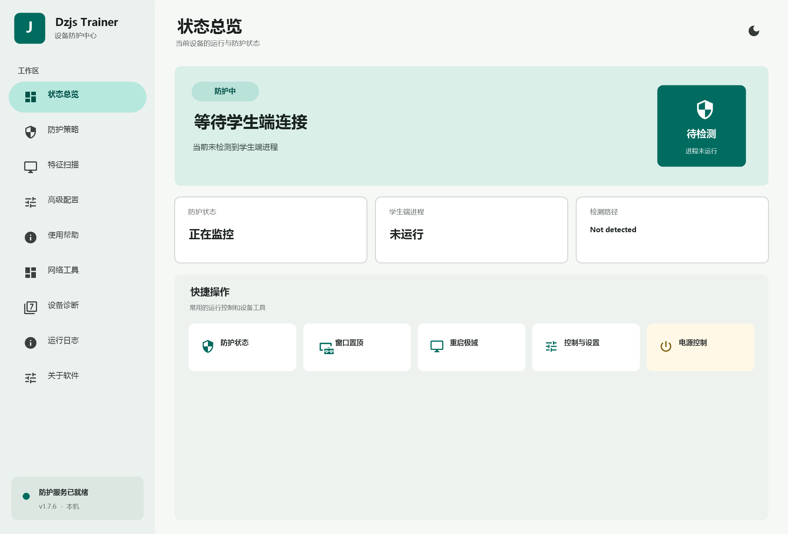

01 / 04
状态总览
一眼查看防护服务、学生端进程与检测路径。设备是否就绪，马上知道。
探索工作台 ↗持续维护 · 2026.09.05 更新
专为教学机房打造的终端管理工作台。状态诊断、防护策略与信息流保护收进一个程序，帮助管理员快速掌握每一台设备。为经授权的机房管理与兼容性研究而构建。
当前设备的运行与防护状态
常用的运行控制和设备工具
SOFTWARE INFO
从启动检查到驱动状态，从防护策略到信息流预览，每个状态都有回应，每个动作都有记录。
一眼查看防护服务、学生端进程与检测路径。设备是否就绪，马上知道。
探索工作台 ↗远程行为拦截、窗口控制、驱动签名校验，按需开启，并支持自动检查更新。
图片与视频预览、选择框和循环播放，保持教学内容在掌控之中。
记录运行状态与设备诊断信息，方便维护者定位每一次异常。
↗THE INTERFACE
沿用熟悉的桌面工作区结构，用低干扰的层级、明确的状态颜色和即时反馈，减少维护时的来回确认。

SYSTEM REQUIREMENTS
主程序与驱动签名绑定，请确保设备满足以下条件。点击下载按钮后将弹出条款窗口，阅读并同意后开始下载。
READY WHEN YOU ARE
稳定版为完整发布包；「直接写入文件夹版」由浏览器把文件直接写入下载文件夹，无需解压。
含主程序与已签名 x64 驱动，解压即用，随包提供 SHA-256 校验文件，适合需要稳定环境的用户。
前往 GitHub 下载 ↗通过本站下载代理把主程序直接写入你选择的文件夹，免解压。需要 Chrome / Edge 最新版浏览器。
直接写入文件夹 ↓CHANGELOG